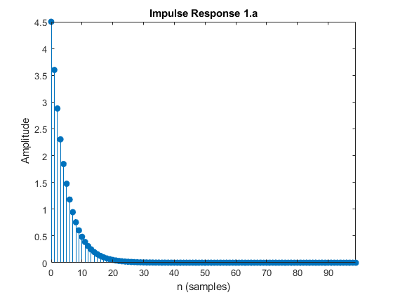
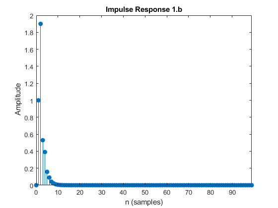
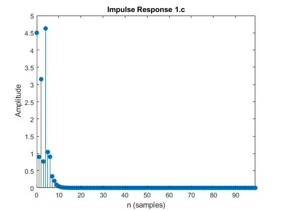
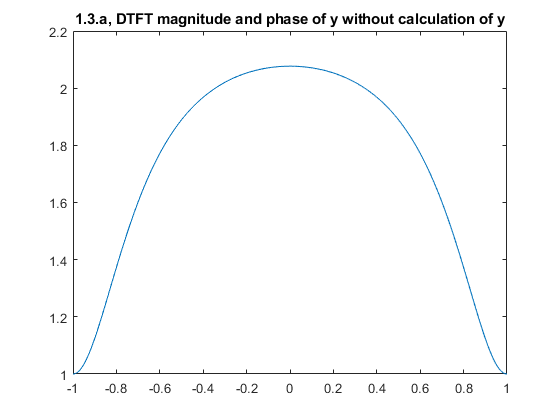
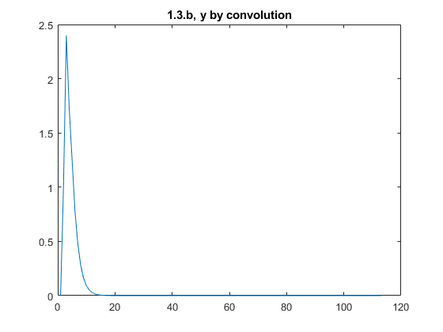
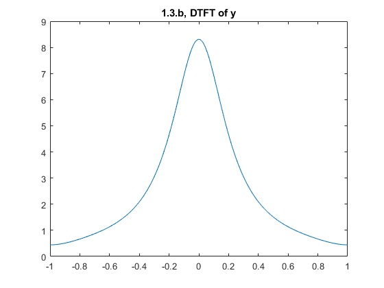
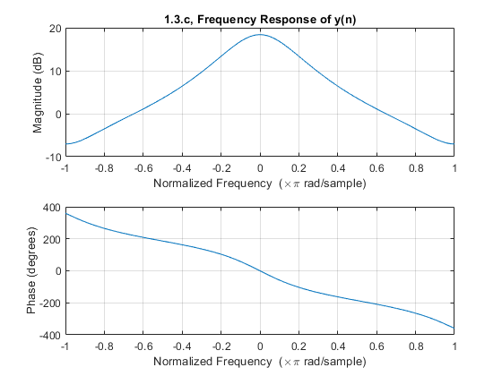
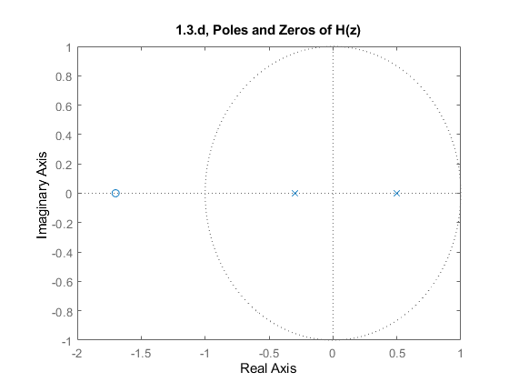

Contents
close all
clear
clc
1.a
b=[4.5];
a=[1 -0.8];
figure(1)
impz(b,a,100)
title('Impulse Response 1.a')

1.b
clear
b=[0 1 1.7];
a=[1 -0.2 -0.15];
figure(2)
impz(b,a,100)
title('Impulse Response 1.b')

1.c
b=[4.5 0 2.3 0 4];
figure(3)
impz(b,a,100)
title('Impulse Response 1.c')

1.3.a
clear
figure(4)
w=linspace(-pi,pi,1024);
h=freqz([0 1 1.7],[1 0.3],w);
plot(w/pi,abs(h))
title('1.3.a, DTFT magnitude and phase of y without calculation of y')

1.3.b
clear
b=[0 1 1.7];
a=[1 -0.2 -0.15];
h=impz(b,a,100);
x=impz([1],[1 -0.5]);
y = conv(h, x);
figure(5)
plot(y)
title('1.3.b, y by convolution')
figure(6)
w=linspace(-pi,pi,1024);
c=freqz(y,1,w);
plot(w/pi,abs(c))
title('1.3.b, DTFT of y')
 
1.3.c
figure(7)
freqz(y,1,w)
title('1.3.c, Frequency Response of y(n)')
syms z
yz=(z+1.7)/(z*(z+0.3));
y=iztrans(yz)
y =
(17*kroneckerDelta(n - 1, 0))/3 + (140*(-3/10)^n)/9 - (140*kroneckerDelta(n, 0))/9

1.3.d
figure(9)
h = tf([0 1 1.7],[1 -0.2 -0.15],0.1,'variable','z^-1')
pzmap(h)
title('1.3.d, Poles and Zeros of H(z)')
h =
z^-1 + 1.7 z^-2
------------------------
1 - 0.2 z^-1 - 0.15 z^-2
Sample time: 0.1 seconds
Discrete-time transfer function.
